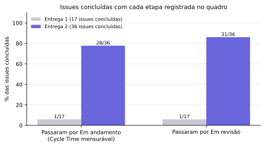
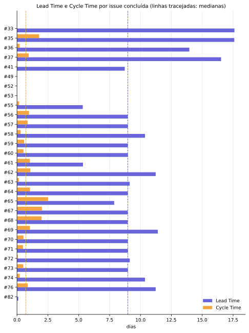
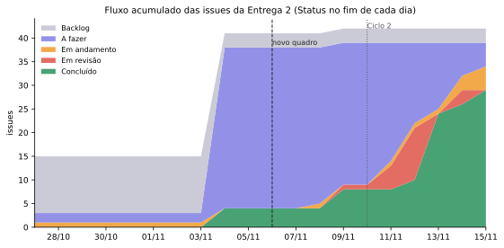
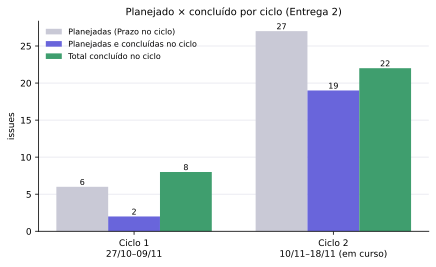
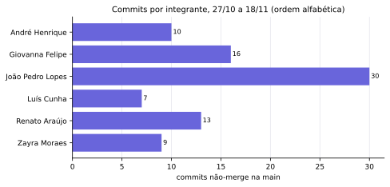
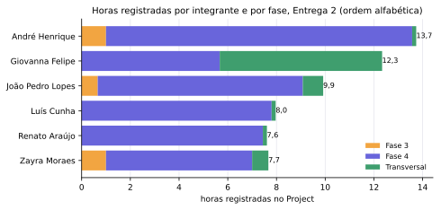
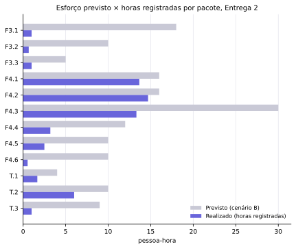
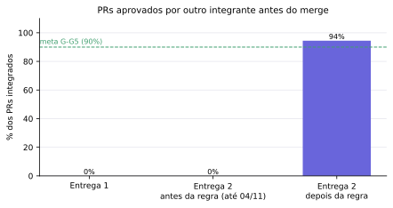

Gráficos de gestão da Entrega 2¶
Esta página aplica à Entrega 2 as medidas definidas nas
métricas de desenvolvimento.
Os gráficos e as tabelas são gerados pelo
workflow de métricas de gestão
a partir do histórico de Status do Kanban e do histórico de commits da
main; os trechos entre os marcadores automáticos não devem ser editados à
mão.
Dados do Project coletados em 24/11/2026 13:37 (horário de Brasília); 42 issues no milestone Entrega 2.
Escopo e regras de contagem¶
- Issues consideradas: as do milestone Entrega 2, exceto as fechadas como not planned. As issues-mãe de cada característica (#17, #18 e #19) entram no fluxo acumulado, mas não têm Prazo.
- Período: de 27/10/2026, dia seguinte à Entrega 1, a 18/11/2026, data da Entrega 2. Os dias seguem o horário de Brasília.
- Ciclos: dois ciclos, no ritmo de duas semanas do processo. O Ciclo 1 vai de 27/10 a 09/11 e o Ciclo 2 de 10/11 a 18/11; o segundo é mais curto porque termina na data da entrega.
- Fonte do Status: os eventos de mudança de Status do Project #19 até a
migração do quadro (06/11/2026 05:47 UTC) e do Project de usuário depois
dela; o quadro voltou ao #19 só em 23/11, depois do fim da Entrega 2, como
descrito em
coleta automática de Lead Time e Cycle Time.
O histórico completo fica em
historico-status.json.
Efeito da troca do quadro¶
Até a Entrega 1, o quadro era o Project #19 da organização, onde só uma pessoa conseguia mover os cartões. Na prática, as issues iam direto para Concluído e as etapas intermediárias não ficavam registradas, o que impedia medir o Cycle Time. Em 06/11/2026 o quadro passou para um Project de usuário, com todos os integrantes como colaboradores (decisão de gestão). O gráfico compara, nas duas entregas, quantas issues concluídas tiveram as etapas Em andamento e Em revisão registradas no quadro.

Gráfico 1. Registro das etapas do Kanban nas issues concluídas da Entrega 1 e da Entrega 2. Fonte: histórico de Status dos dois quadros.
| Entrega | Issues concluídas | Passaram por Em andamento | Passaram por Em revisão |
|---|---|---|---|
| Entrega 1 | 17 | 1 (6%) | 1 (6%) |
| Entrega 2 | 36 | 28 (78%) | 31 (86%) |
Lead Time e Cycle Time¶
Lead Time vai da criação da issue até a entrada em Concluído; Cycle Time,
da entrada em Em andamento até Concluído. Para issues concluídas mais
de uma vez, valem a última conclusão e o primeiro início depois da conclusão
anterior, a mesma regra do lead-cycle-time.csv.
Issues que foram direto para Concluído, sem passar por Em andamento,
ficam com Cycle Time N/A.
Limitação do Cycle Time
O Cycle Time só é tão preciso quanto o momento em que o cartão é movido. Quando o cartão vai para Em andamento só perto de abrir o pull request, o trabalho feito antes não entra na conta, e o Cycle Time fica menor que o tempo real de execução.

Gráfico 2. Lead Time e Cycle Time por issue concluída. Fonte: histórico de Status do Kanban.
| Issue | Título | Concluída em | Lead Time (dias) | Cycle Time (dias) |
|---|---|---|---|---|
| #20 | Resultados da análise | 22/11 | 34,4 | 7,1 |
| #33 | Declarações de uso de IA | 13/11 | 17,6 | N/A |
| #35 | Plano de avaliação (Fase 3) | 13/11 | 17,6 | 1,8 |
| #36 | Ambiente de teste e instância local do Excalidraw | 09/11 | 14,0 | 0,2 |
| #37 | Roteiro de tarefas, participantes e consentimento | 12/11 | 16,5 | 1,0 |
| #38 | Oportunidade de melhoria e ação executada | 22/11 | 27,0 | N/A |
| #39 | Ameaças à validade e conclusão | 22/11 | 27,0 | N/A |
| #40 | Gestão PSM/CID na Entrega 2 | 15/11 | 20,1 | 1,1 |
| #41 | Revisão obrigatória na main | 04/11 | 8,7 | 0,0 |
| #49 | CI-M18 e M26 | 04/11 | 0,0 | N/A |
| #52 | S-M9 suficiência da autenticação | 04/11 | 0,0 | N/A |
| #53 | S-M13 cabeçalhos de segurança HTTP | 04/11 | 0,0 | N/A |
| #55 | S-M1 e S-M2 criptografia da colaboração e chave enviada ao servidor | 09/11 | 5,3 | 0,2 |
| #56 | S-M3 mecanismos de controle de acesso | 13/11 | 9,0 | 1,0 |
| #57 | S-M4 dados locais sem criptografia | 13/11 | 9,0 | 0,9 |
| #58 | S-M5 e S-M6 detecção de adulteração e edição simultânea | 14/11 | 10,4 | 0,3 |
| #59 | S-M7 e S-M8 trilha de auditoria e histórico de versões com autoria | 13/11 | 9,0 | 0,6 |
| #60 | S-M10 personificação pelo nome exibido | 13/11 | 9,0 | 0,5 |
| #61 | S-M11 e S-M12 vulnerabilidades nas dependências e advisories | 09/11 | 5,3 | 1,0 |
| #62 | F-M1, F-M2 e F-M3 compatibilidade de navegadores e sistemas | 15/11 | 11,2 | 1,1 |
| #63 | F-M4 cobertura funcional em dispositivos móveis | 13/11 | 9,1 | 0,2 |
| #64 | F-M5 e F-M6 funcionamento offline e resoluções | 13/11 | 9,0 | 1,1 |
| #65 | F-M7 inclusão funcional em relação ao draw.io ou Miro | 12/11 | 7,9 | 2,5 |
| #66 | F-M8 e F-M9 tempo e conclusão de tarefas nas sessões com participantes | 22/11 | 18,0 | 6,8 |
| #67 | F-M11 fidelidade de migração (exportar e reimportar) | 13/11 | 9,0 | 2,0 |
| #68 | CI-M7 e CI-M10 cobertura da ajuda interna e dos atalhos | 13/11 | 9,0 | 2,0 |
| #69 | CI-M9 e CI-M12 cliques por tarefa e consistência | 15/11 | 11,4 | 1,0 |
| #70 | CI-M13 e CI-M14 retorno visual e desfazer/refazer | 13/11 | 9,0 | 0,5 |
| #71 | CI-M15 e CI-M16 confirmação de ações destrutivas e recuperação | 13/11 | 9,0 | 0,5 |
| #72 | CI-M22 e CI-M25 violações da WCAG 2.2 e contraste | 13/11 | 9,1 | 0,1 |
| #73 | CI-M23 funções operáveis sem mouse | 13/11 | 9,0 | 0,5 |
| #74 | CI-M24 elementos anunciados por leitor de tela | 14/11 | 10,4 | 0,2 |
| #75 | Sessões com participantes: CI-M1 a CI-M6, CI-M8, CI-M11, CI-M17 e CI-M19 a CI-M21 | 22/11 | 18,4 | 11,4 |
| #76 | Gráficos de gestão da Entrega 2 | 15/11 | 11,2 | 0,9 |
| #77 | Revisão cruzada das métricas e decisões de denominador | 23/11 | 19,4 | N/A |
| #82 | Páginas de resultado de S-M9, S-M13, F-M10, F-M12, CI-M18 e CI-M26 | 09/11 | 0,1 | N/A |
Mediana: Lead Time de 9,1 dias (36 issues) e Cycle Time de 0,9 dias (28 issues; 8 sem passagem por Em andamento ficam como N/A).
Fluxo acumulado¶
Para cada dia, conta quantas issues da Entrega 2 estavam em cada Status no fim do dia. Uma issue só aparece a partir do primeiro Status registrado no quadro. A linha tracejada marca a troca do quadro (06/11). Faixas de Em andamento e Em revisão largas indicam muito trabalho aberto ao mesmo tempo (WIP).

Gráfico 3. Diagrama de fluxo acumulado da Entrega 2. Fonte: histórico de Status do Kanban.
A tabela mostra o início do período, o início de cada ciclo, as segundas-feiras e o último dia coletado.
| Dia | Backlog | A fazer | Em andamento | Em revisão | Concluído | WIP (andamento + revisão) |
|---|---|---|---|---|---|---|
| 27/10 | 12 | 2 | 1 | 0 | 0 | 1 |
| 02/11 | 12 | 2 | 1 | 0 | 0 | 1 |
| 09/11 | 3 | 30 | 0 | 1 | 8 | 1 |
| 10/11 | 3 | 30 | 0 | 1 | 8 | 1 |
| 16/11 | 3 | 4 | 5 | 0 | 30 | 5 |
| 18/11 | 3 | 4 | 5 | 0 | 30 | 5 |
Planejado × concluído por ciclo¶
- Planejadas: issues com Prazo dentro do ciclo.
- Planejadas e concluídas: dessas, as que estavam em Concluído no fim do ciclo (ou na data da coleta, se o ciclo ainda está em curso).
- Total concluído no ciclo: todas as issues cuja conclusão caiu no ciclo, inclusive as sem Prazo e as atrasadas de um ciclo anterior; equivale à velocidade do ciclo.

Gráfico 4. Issues planejadas e concluídas em cada ciclo. Fonte: campo Prazo e histórico de Status do Kanban.
| Ciclo | Período | Planejadas | Planejadas e concluídas | Planejado × concluído | Total concluído no ciclo |
|---|---|---|---|---|---|
| Ciclo 1 | 27/10 a 09/11 | 6 | 2 | 33% | 8 |
| Ciclo 2 | 10/11 a 18/11 | 27 | 19 | 70% | 22 |
Issues da Entrega 2 sem Prazo no Project (fora do planejado): 8 (#17, #18, #19, #41, #49, #52, #53, #82).
Commits por integrante¶
Commits não-merge na main feitos no período da Entrega 2, com as
identidades de Git agrupadas por integrante e sem commits de bots. É um dado
descritivo de atividade no repositório e aparece em ordem alfabética: commits
variam em tamanho e há trabalho que não passa pelo Git (sessões com
participantes, revisões, artigo), então o número não mede esforço nem
contribuição e não serve para comparar integrantes.

Gráfico 5. Commits não-merge por integrante na Entrega 2. Fonte: histórico de
commits da main.
| Integrante | Commits não-merge |
|---|---|
| André Henrique | 10 |
| Giovanna Felipe | 16 |
| João Pedro Lopes | 30 |
| Luís Cunha | 7 |
| Renato Araújo | 13 |
| Zayra Moraes | 9 |
| Total | 85 |
Horas por integrante e por fase¶
Horas de trabalho registradas no campo Horas do Project. Em issue de um só responsável, vale o campo; em atividade compartilhada, vale o comentário "Horas: x" de cada integrante na issue (sem comentários, o campo é dividido igualmente entre os responsáveis). As fases seguem os pacotes da estimativa de custos: Fase 3 é o plano de avaliação, Fase 4 são as medições e a análise, e Transversal reúne GitPage, gestão e revisão. Como em commits, a ordem é alfabética e o número não serve para comparar integrantes: as horas dependem do registro de cada um.

Gráfico 6. Horas registradas no Project por integrante e por fase. Fonte: campo Horas e comentários das issues.
| Integrante | Fase 3 | Fase 4 | Transversal | Total |
|---|---|---|---|---|
| André Henrique | 1,0 | 12,6 | 0,2 | 13,7 |
| Giovanna Felipe | 0,0 | 5,7 | 6,7 | 12,3 |
| João Pedro Lopes | 0,7 | 8,4 | 0,8 | 9,9 |
| Luís Cunha | 0,0 | 7,8 | 0,2 | 8,0 |
| Renato Araújo | 0,0 | 7,4 | 0,2 | 7,6 |
| Zayra Moraes | 1,0 | 6,0 | 0,7 | 7,7 |
| Total | 2,7 | 47,9 | 8,7 | 59,2 |
Issues concluídas com horas registradas: 34 de 37. Sem horas no Project (preencher o campo Horas ou comentar "Horas: x" na issue): #20, #42, #75.
Esforço previsto × realizado¶
Compara, por pacote da estimativa de custos, o
esforço que restava na data-base da estimativa (25/10, cenário B) com as
horas registradas nas issues do pacote
(desvio = realizado − previsto). A ligação entre issue e pacote está em
pacotes-issues.json. Enquanto houver issues
abertas ou sem horas, o realizado é um piso, e não o esforço final.

Gráfico 7. Esforço previsto (cenário B) e horas registradas por pacote. Fonte: estimativa de custos e campo Horas do Project.
| Pacote | Issues | Previsto B (p-h) | Realizado (p-h) | Desvio |
|---|---|---|---|---|
| F3.1 | #35 | 18,0 | 1,0 | -17,0 (-94%) |
| F3.2 | #36 | 10,0 | 0,7 | -9,3 (-93%) |
| F3.3 | #37 | 5,0 | 1,0 | -4,0 (-80%) |
| F4.1 | #52, #53, #55, #56, #57, #58, #59, #60, #61 | 16,0 | 13,7 | -2,3 (-15%) |
| F4.2 | #62, #63, #64, #65, #66, #67 | 16,0 | 14,7 | -1,3 (-8%) |
| F4.3 | #49, #68, #69, #70, #71, #72, #73, #74, #75 | 30,0 | 13,3 | -16,7 (-56%) |
| F4.4 | #20, #77 | 12,0 | 3,2 | -8,8 (-73%) |
| F4.5 | #38 | 10,0 | 2,5 | -7,5 (-75%) |
| F4.6 | #39, #42 | 10,0 | 0,5 | -9,5 (-95%) |
| T.1 | #43, #82 | 4,0 | 1,7 | -2,3 (-58%) |
| T.2 | #40, #41, #76 | 10,0 | 6,0 | -4,0 (-40%) |
| T.3 | #33 | 9,0 | 1,0 | -8,0 (-89%) |
| Total | 150,0 | 59,2 | -90,8 (-61%) |
Custo de referência do realizado: R$ 478,58 (59,2 p-h × R$ 8,08/p-h), contra R$ 1.212,00 previstos.
Revisão efetiva dos pull requests¶
Métrica G-G5 da gestão do grupo:
pull requests integrados com aprovação (Approve) de outro integrante antes
do merge ÷ pull requests integrados. Comentários e revisões de bots não
contam. O período da Entrega 2 é dividido pela regra de revisão obrigatória
na main (#41,
04/11), decisão tomada a partir da medição da Entrega 1. Pela mesma regra de
contagem, nenhum PR da Entrega 1 teve aprovação formal; o valor de 2 de 12
registrado no artigo da Entrega 1 contava também revisões sem aprovação.

Gráfico 8. Percentual de PRs aprovados por outro integrante antes do merge. Fonte: pull requests e revisões do repositório.
| Período | PRs integrados | Aprovados por outro integrante | Revisão efetiva | Pontos G-G5 | Integrados pelo próprio autor | Commits direto na main |
|---|---|---|---|---|---|---|
| Entrega 1 | 12 | 0 | 0% | 0 | 5 | 13 |
| Entrega 2, antes da regra (até 04/11) | 7 | 0 | 0% | 0 | 0 | 2 |
| Entrega 2, depois da regra | 37 | 35 | 95% | 2 | 1 | 0 |
| Entrega 2 (total) | 44 | 35 | 80% | 1 | 1 | 2 |
Integrados sem aprovação depois da regra: #87, #103.
Como reproduzir¶
# coleta do Project (token com os escopos public_repo e project)
PROJECTS_TOKEN=<token> GITHUB_REPOSITORY=FCTE-Qualidade-de-Software-1/2026-2_T02_ADA_LOVELACE \
python scripts/collect_project_metrics.py
# gráficos e tabelas desta página
python scripts/gerar_graficos_gestao.py
O segundo comando não acessa a API: usa o último historico-status.json
versionado e o histórico local do Git (com a main atualizada).